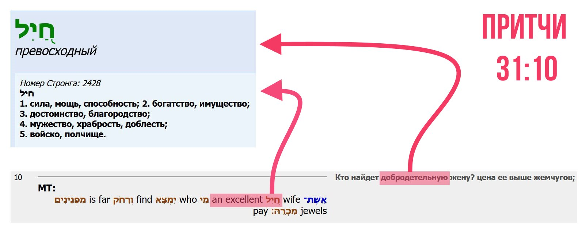
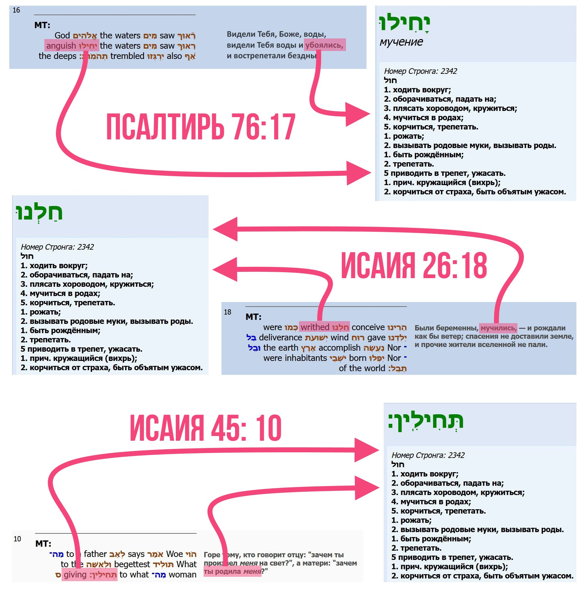

Некоторые теологи в книге Притчи в 31 главе находят, что описанная там женщина не "добродетельная", а "воинственная", приводя в доказательство значение слова חַ֭יִל хайиль. И действительно, заглянув в иврит можно обнаружить нечто подобное:

Приведу по этому поводу цитату человека, который серьёзно занимается ивритом:
В Притчи 31:10 Эшет хайиль означает "успешная жена", а не "воинственная". Тоже значение в 31:29... Это слово связано с глаголом "яхилу" (преуспеют) в Псалме 10:5. Смыслы слов переплелись по причине того, что был забыт фактор, что "хет" могла быть гортанной и простой, что при этом "хайиль" имело несколько значений несвязанных друг с другом. Этот же корень имеет несколько значений: бояться, трепетать (Псалом 77(76):17); корчиться от боли, ощущать боль (Исаия 26:18); рожать (Исайия 45:10); преуспевать (Псалом 10:5).
